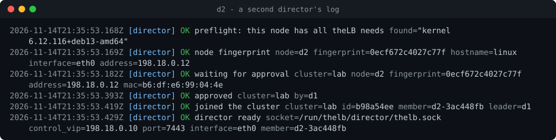
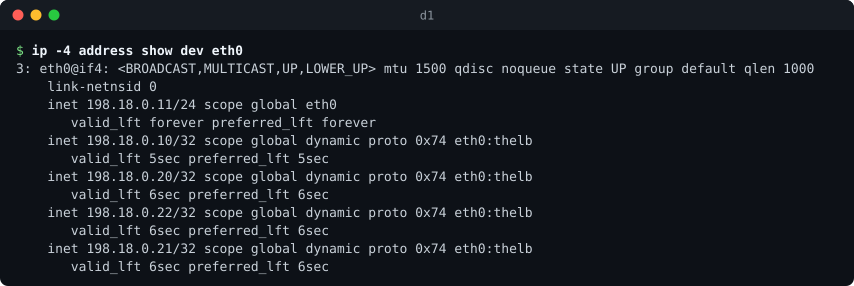
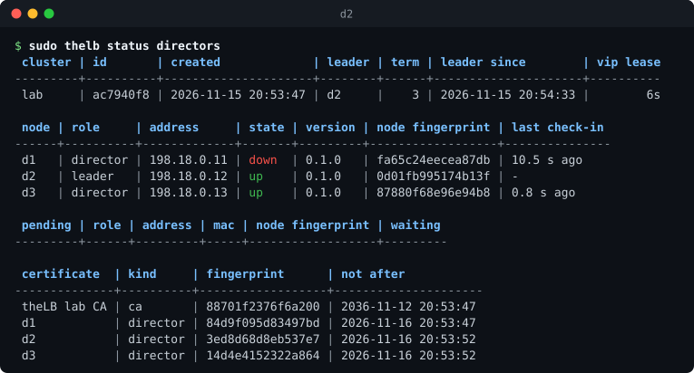
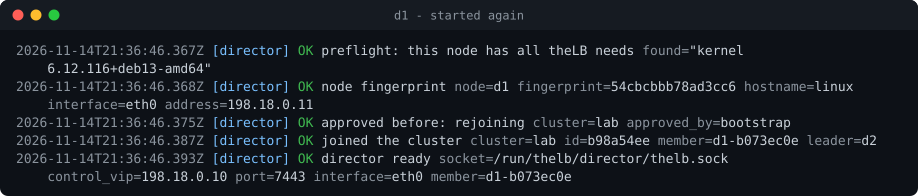

Guides
Directors and failover
Add directors so that the VIPs survive a failed machine. Three is the right number for most setups.
Add a director#
Copy both secret files - director.secret and backend.secret - to the new machine, readable by root only. Then start it with the same command as the first one (with or without --bootstrap):
sudo thelb director --vip 10.0.0.10 --port 7443 \
--secret-file /etc/thelb/director.secret --backend-secret-file /etc/thelb/backend.secretIt finds the cluster on the control VIP and waits for approval. Approve it on any director:
sudo thelb admin approve lb-2It then copies the cluster's state from the leader. Once it has caught up, it becomes a voting member, and can take over if the leader fails.

As text
2026-11-15T20:53:52.190Z [director] OK preflight: this node has all theLB needs found="kernel 6.12.116+deb13-amd64"
2026-11-15T20:53:52.192Z [director] OK node fingerprint node=d2 fingerprint=0d01fb995174b13f hostname=linux interface=eth0 address=198.18.0.12
2026-11-15T20:53:52.206Z [director] OK waiting for approval cluster=lab node=d2 fingerprint=0d01fb995174b13f address=198.18.0.12 mac=8e:7f:28:02:95:30
2026-11-15T20:53:52.417Z [director] OK approved cluster=lab by=d1
2026-11-15T20:53:52.441Z [director] OK joined the cluster cluster=lab id=ac7940f8 member=d2-7517a90e leader=d1
2026-11-15T20:53:52.465Z [director] OK director ready socket=/run/thelb/director/thelb.sock control_vip=198.18.0.10 port=7443 interface=eth0 member=d2-7517a90ethelb status directors shows every director, its state, and the cluster's leader:

As text
$ sudo thelb status directors
cluster | id | created | leader | term | leader since | vip lease
---------+----------+---------------------+--------+------+---------------------+-----------
lab | ac7940f8 | 2026-11-15 20:53:47 | d1 | 2 | 2026-11-15 20:53:48 | 6s
node | role | address | state | version | node fingerprint | last check-in
------+----------+-------------+-------+---------+------------------+---------------
d1 | leader | 198.18.0.11 | up | 0.1.0 | fa65c24eecea87db | -
d2 | director | 198.18.0.12 | up | 0.1.0 | 0d01fb995174b13f | 0.7 s ago
d3 | director | 198.18.0.13 | up | 0.1.0 | 87880f68e96e94b8 | 0.7 s ago
pending | role | address | mac | node fingerprint | waiting
---------+------+---------+-----+------------------+---------
certificate | kind | fingerprint | not after
--------------+----------+------------------+---------------------
theLB lab CA | ca | 88701f2376f6a200 | 2036-11-12 20:53:47
d1 | director | 84d9f095d83497bd | 2026-11-16 20:53:47
d2 | director | 3ed8d68d8eb537e7 | 2026-11-16 20:53:52
d3 | director | 14d4e4152322a864 | 2026-11-16 20:53:52How many directors?#
| Directors | What it survives |
|---|---|
| 1 | nothing: if it stops, the VIPs stop. Fine for trying theLB. |
| 2 | one planned stop, or one crash - with a few rules (below) |
| 3 | any one failure, with no guessing. Recommended. |
| 5 | any two failures |
The cluster uses Raft: a change counts once a majority of the voting directors have it. Three directors keep their majority when any one fails.
The leader and the VIP lease#
One director, the leader, holds the control VIP and every service VIP, and programs the kernel's load balancer (IPVS). The others follow, and are ready to take over.
The leader adds each VIP with a lifetime - a lease. By default the lease is 6 seconds, and the leader renews it every 2 seconds. You can see it with ip address: valid_lft 6sec.

eth0: its own address, the control VIP (eth0:thelb) and the service VIPs, each with valid_lft - its lease.As text
$ ip -4 address show dev eth0
3: eth0@if4: <BROADCAST,MULTICAST,UP,LOWER_UP> mtu 1500 qdisc noqueue state UP group default qlen 1000 link-netnsid 0
inet 198.18.0.11/24 scope global eth0
valid_lft forever preferred_lft forever
inet 198.18.0.10/32 scope global dynamic proto 0x74 eth0:thelb
valid_lft 5sec preferred_lft 5sec
inet 198.18.0.20/32 scope global dynamic proto 0x74 eth0:thelb
valid_lft 6sec preferred_lft 6sec
inet 198.18.0.22/32 scope global dynamic proto 0x74 eth0:thelb
valid_lft 6sec preferred_lft 6sec
inet 198.18.0.21/32 scope global dynamic proto 0x74 eth0:thelb
valid_lft 6sec preferred_lft 6secWhy a lease? If theLB is killed, or its machine hangs, it stops renewing. Its own kernel then removes the VIPs when the lease runs out. So a dead theLB never leaves a VIP answering on the network.
No director ever takes a VIP that another machine still answers for. Before a new leader takes a VIP, it looks twice, one second apart. It takes the VIP only when nothing answers for it (no ARP or neighbour reply, and for the control VIP, nothing accepting connections on it).
You can change the lease:
sudo thelb admin lease 10 # seconds, from 3 to 3600The lease is stored in the cluster's state, so every director knows how long a stopped leader's VIP can still answer. A longer lease means a slower takeover after a crash. A shorter one means more renewals.
When a director stops or fails#
A planned stop#
Stop a director with SIGTERM, Ctrl+C or systemctl stop. If it was leading, it first hands leadership to another director - a short, clean failover. Then it leaves the vote, so the others keep their majority without it.
It stays approved: when it starts again, it rejoins without approval. thelb status directors shows it as stopped.
A crash, with three or more directors#
The others still have a majority. They elect a new leader within a few seconds. The new leader takes each VIP once its lease has run out on the dead machine.
After 10 seconds without hearing from the dead director, the leader checks it. If it is really gone - its control port refuses connections, or its machine does not answer at all - the leader takes it out of the vote. That way, a second crash still leaves a working majority. thelb status shows it as down:

down, out of the vote.As text
$ sudo thelb status directors
cluster | id | created | leader | term | leader since | vip lease
---------+----------+---------------------+--------+------+---------------------+-----------
lab | ac7940f8 | 2026-11-15 20:53:47 | d2 | 3 | 2026-11-15 20:54:33 | 6s
node | role | address | state | version | node fingerprint | last check-in
------+----------+-------------+-------+---------+------------------+---------------
d1 | director | 198.18.0.11 | down | 0.1.0 | fa65c24eecea87db | 10.5 s ago
d2 | leader | 198.18.0.12 | up | 0.1.0 | 0d01fb995174b13f | -
d3 | director | 198.18.0.13 | up | 0.1.0 | 87880f68e96e94b8 | 0.8 s ago
pending | role | address | mac | node fingerprint | waiting
---------+------+---------+-----+------------------+---------
certificate | kind | fingerprint | not after
--------------+----------+------------------+---------------------
theLB lab CA | ca | 88701f2376f6a200 | 2036-11-12 20:53:47
d1 | director | 84d9f095d83497bd | 2026-11-16 20:53:47
d2 | director | 3ed8d68d8eb537e7 | 2026-11-16 20:53:52
d3 | director | 14d4e4152322a864 | 2026-11-16 20:53:52When the crashed director starts again, it cleans up what it left in its kernel and rejoins - without approval:

As text
2026-11-15T20:54:44.401Z [director] OK preflight: this node has all theLB needs found="kernel 6.12.116+deb13-amd64"
2026-11-15T20:54:44.403Z [director] OK node fingerprint node=d1 fingerprint=fa65c24eecea87db hostname=linux interface=eth0 address=198.18.0.11
2026-11-15T20:54:44.410Z [director] OK approved before: rejoining cluster=lab approved_by=bootstrap
2026-11-15T20:54:44.426Z [director] OK joined the cluster cluster=lab id=ac7940f8 member=d1-c2269a13 leader=d2
2026-11-15T20:54:44.430Z [director] OK director ready socket=/run/thelb/director/thelb.sock control_vip=198.18.0.10 port=7443 interface=eth0 member=d1-c2269a13Connections in progress#
Connections keep going through a failover. The leader sends its connection table to the other directors all the time (IPVS connection sync, by multicast). So the new leader already knows which backend each open connection belongs to. This needs multicast between the directors - see the firewall table in Install.
Two directors#
Two directors work, but a crash is harder to judge: the one left alone has no majority, so it cannot simply win an election. theLB handles it like this:
- The survivor waits until the lease has surely run out - the lease plus 2 seconds (8 seconds by default). The director whose name sorts later waits 6 seconds more, so the two never act at the same moment.
- Then it checks that the other is gone (its control port refuses connections, or its machine is silent), that its own gateway answers (so it is not the one cut off), and that the control VIP is free.
- If all three hold, it stands alone: it takes the VIP and goes on as the only voter, with every pool, service and assignment. The crashed director must be approved again when it comes back - it might have crashed for a reason you want to look at first.
If the other's machine still holds the VIP after the lease, the survivor does not take it: something is still alive there.
Give two directors a gateway
The gateway check is what tells a director that it is the one cut off. Make sure the control VIP's network has a gateway that answers.
When both directors are alive but cannot talk to each other:
| What is between them | What happens |
|---|---|
| A firewall that drops the control port | Neither stands alone: each can see the other on the network. No leader until they can talk again. |
| A firewall that rejects the control port | One stands alone and takes the VIP. The other finds the VIP in use and stays out. One leader. |
| A cut neither can see | Both stand alone, each on its side. When they see each other again, the one whose name sorts later stands down and waits for approval. Changes made on its side meanwhile are lost. |
Under systemd with two directors, use RestartSec=30 (thelb generate systemd does this). A crashed director that restarts sooner could create a cluster of its own before the other has stood alone. With a lease longer than 6 seconds, use the lease plus 25 seconds.
--bootstrap#
--bootstrap lets a director create the cluster when it finds none, after looking for 5 seconds. Put it on the first director. You may put it on others too, so that the cluster does not depend on one machine coming back after every director has stopped.
When every director stops
The cluster's state lives in the directors' memory. If every director stops, it is gone: the next director with --bootstrap creates a new cluster, every node must be approved again, and pools, services and assignments must be created again. Keep a copy with thelb generate commands.